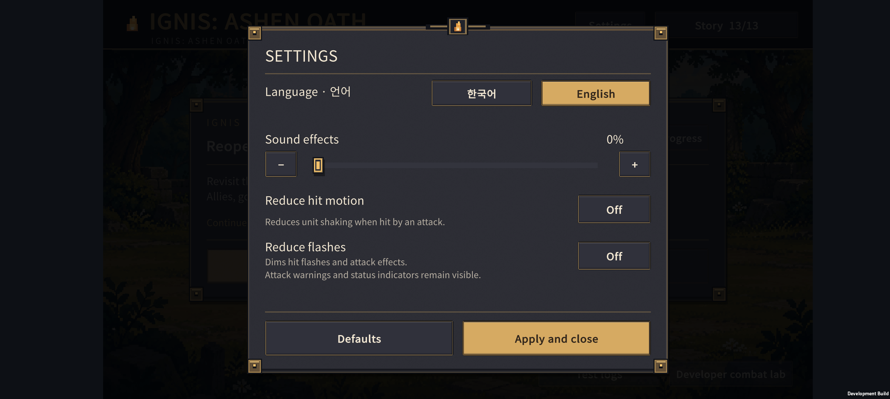
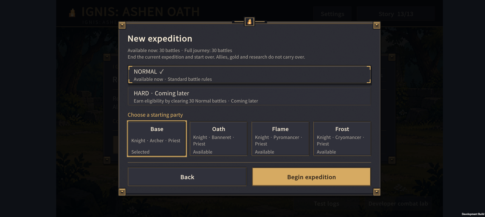
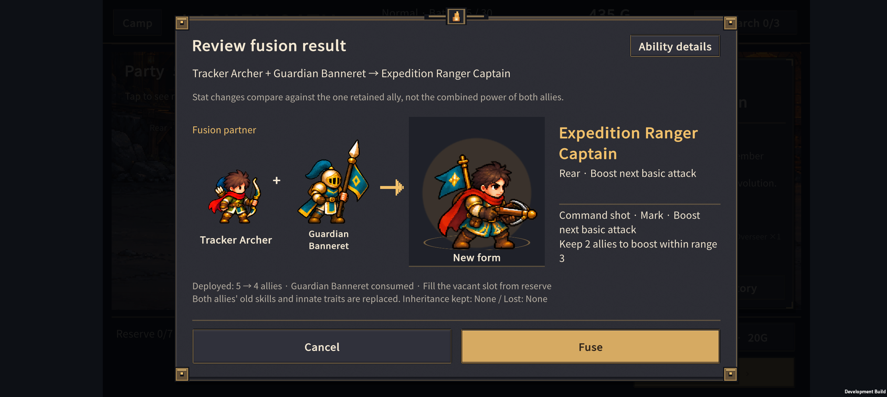
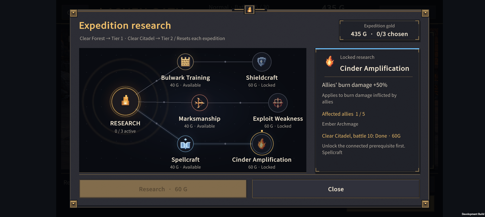
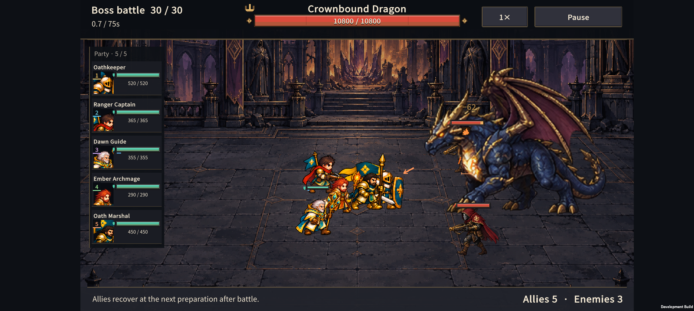
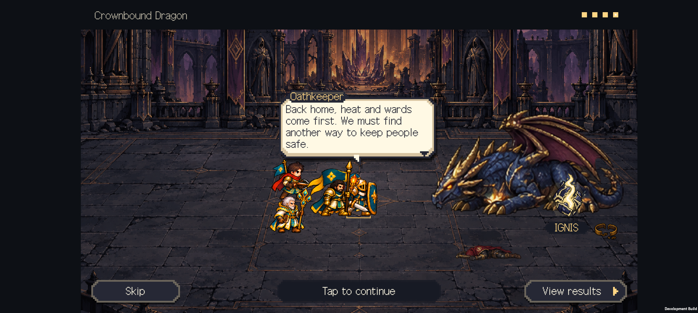
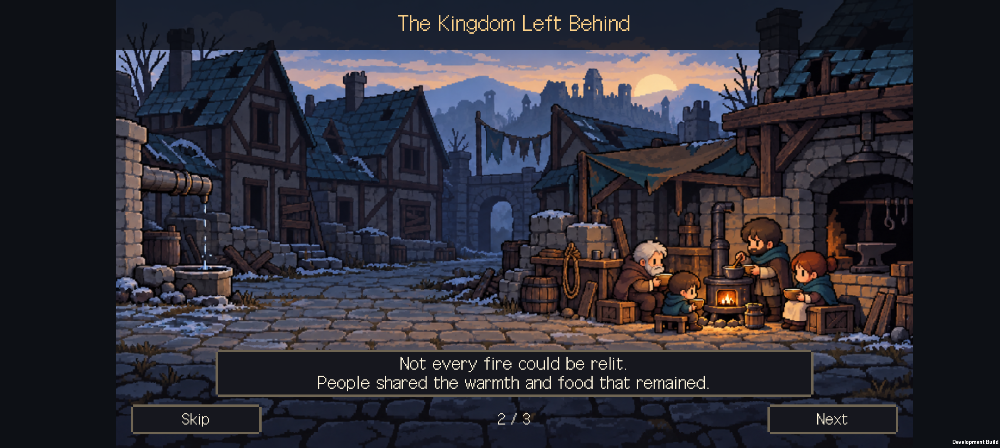

v0.69 · 한국어·영어 지원
2026-11-02 · IGNIS: ASHEN OATH
게임 설정에서 한국어와 영어를 전환할 수 있다. 처음에는 기기 언어가 한국어일 때 한국어, 그 외에는 영어로 실행한다. 직접 선택한 언어는 앱을 다시 실행해도 유지한다.
사용 방법
거점이나 전투 일시정지 화면의 설정 / Settings → Language · 언어 → 한국어 / English에서 선택한다. 화면에는 즉시 반영되며 적용하고 닫기 / Apply and close로 저장한다. 언어 이름은 어느 언어를 선택해도 두 가지 모두 읽을 수 있다.
언어는 기기 설정으로 저장한다. 기존 원정의 동료·골드·연구·배치·남은 기회·점수·이야기 기록은 그대로 이어진다. 예전 설정에는 언어 항목이 없어도 음량과 접근성 옵션을 유지한다. 설정의 Defaults는 언어도 기기 기준으로 되돌린다.
이번 적용 범위
- 시작·이어하기·편성·소환·성장·진화·결합·전승 화면.
- 30형태의 이름·능력·특성 설명, 연구 트리·비용·지역 돌파 조건.
- 첫 플레이 안내, 전투 HUD, 패배와 재도전, 전투 기록·원정 결과.
- 30전투의 지역 설명, 이야기 기록 13개, 보스 6종의 대사 24개, 시즌1 엔딩.
- 설정·저장 오류·안내 문구. 번역 표는 한국어·영어 966개 항목이다.
영어가 길어지는 부분은 시작 편성의 직업 목록에 두 줄 공간을 주고, 전투 기록의 불필요한 접두어를 줄였다. 원정 유격대장은 전투 왼쪽의 좁은 HUD에서 Ranger Captain, 상세·결합에서는 Expedition Ranger Captain으로 표시한다. 짧은 캡션의 숨은 상하 여백도 제거했다.
검증
번역 표 생성 검사: 누락·중복 키·자리표시자 불일치·영어 표의 한국어 잔류 검사 통과.
현지화 테스트 4,772개 통과. 정적 데이터 생성 후 반복 전환, 이전 설정 읽기, 원정 저장 상태 보존을 포함한다.
동일 시작 상태의 12쌍 전투에서 언어를 바꾸어도 소환 결과·위치·체력·보호막·최종 결과와 원정 저장 내용이 같았다. 언어 독립성 검사이며 난이도 통계가 아니다.
기존 저장 검사 150개, 이야기 62개, 전투 기록 17개, 유닛 미리보기 1,917개, 연구 61개 통과.
Unity 검사 149개 통과. 실제 Unity JSON으로 이전 설정과 새 언어 값을 읽고 저장했으며, 한영 보스 대사의 줄바꿈·말풍선 높이를 확인했다.
Buddy2에서 실제 터치로 English 선택과 저장, 앱 재시작 후 유지 확인.
Buddy2 최종 APK에서 366개 화면 상태 검사·39개 캡처, 측정한 텍스트 영역의 넘침 0건. 30형태 × 3개 상세 탭, 선택 시 지원 범위, 30전투 준비 화면, 연구·기록·튜토리얼·보스 대사·엔딩을 포함했다. 주요 캡처도 직접 확인했다. 이것이 모든 화면 크기와 모든 조합의 무결함을 보장하는 것은 아니다.
발견한 시작 편성·전투 기록·긴 동료 이름·상세 캡션의 잘림을 수정하고 재검사했다. 좁은 범위 상태 칸은 Too far / In range로 표시한다.
Android 개발 APK 빌드·업데이트 설치 성공. 검사 후 Buddy2의 기존 저장 슬롯과 PlayerPrefs를 백업 원본과 바이트 단위로 일치하도록 복원했다.

Buddy2 화면
영어 설정과 시작 편성:


결합의 이득과 손실, 연구 해금 조건:


전투·대사·엔딩:



위 화면은 UI 확인용 편성을 사용한 개발 APK 캡처다. 임의로 전투를 완료한 이야기 장면과 검사용 편성을 포함하므로 실제 난이도나 일반 플레이어의 완주 결과를 뜻하지 않는다.
번역을 계속 유지하는 방법
현지화 기준·용어표·파일 안내에 정리했다. 새 문구는 한국어와 영어를 함께 추가한다. 고유명은 일관되게 사용하고, 숫자가 들어가는 새 문장은 문장 전체를 번역한다. 번역은 앱에 포함되므로 인터넷 연결이나 번역 API가 필요 없다.
전투 밸런스는 normal-067 / Rules 6 / Run Save 14를 유지한다. v0.68의 재도전 연결·후반 비교도 함께 포함되어 있다.
다음 확인
영문 기능을 제공하는 것과 영어권 첫 플레이를 검증하는 것은 별개다. 영어 사용자에게 소환 → 성장 → 첫 진화 → 연구 → 패배 후 재도전을 설명 없이 진행하게 해 막히는 문구를 고친다. 이야기·고유명은 영어 모국어 검수를 한 차례 더 거치는 것이 좋다.
마켓 소개, 개인정보 안내, 광고 동의 화면은 출시 구성이 정해진 뒤 별도 현지화한다. 이번 작업은 한국어·영어 게임 내 지원이며 제3언어, 실제 마켓 등록, 레딧 게시까지 포함하지 않는다.